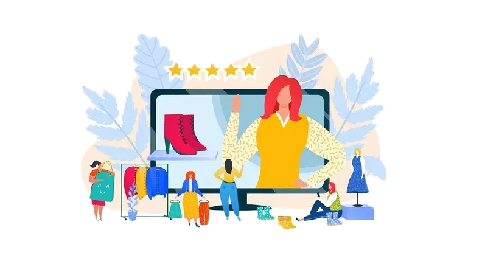

Jeszcze niedawno branża mody pozostawała zamkniętym światem, do którego bardzo trudno było się dostać. Była zarezerwowana dla kolorowych magazynów, zamkniętych pokazów mody i top modelek. Te ostatnie, aby zostać zauważone przez domy mody, musiały budować swoją markę przez liczne współprace, kontrakty czy przesłuchania. Zdobywanie znajomości i system poleceń były wówczas niezawodną metodą, aby zostać ikoną mody i eksponować trendy wyznaczane przez przemysł modowy.